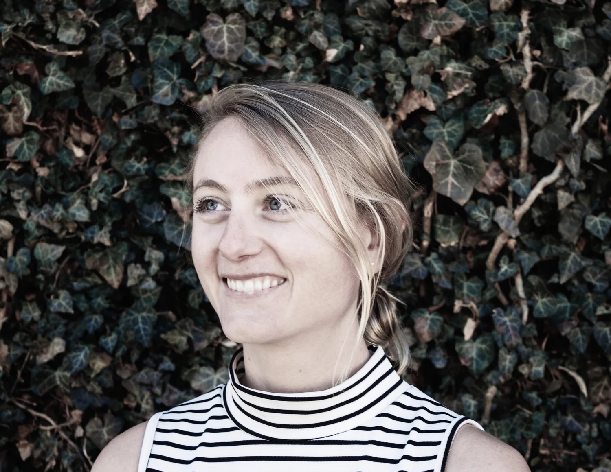
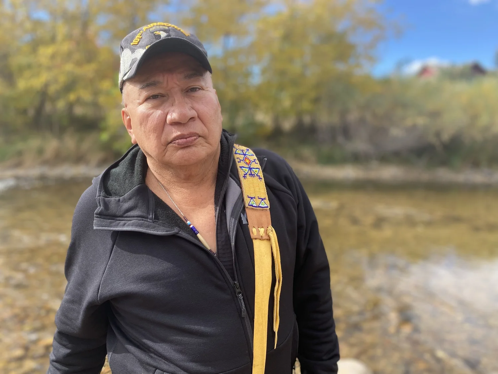
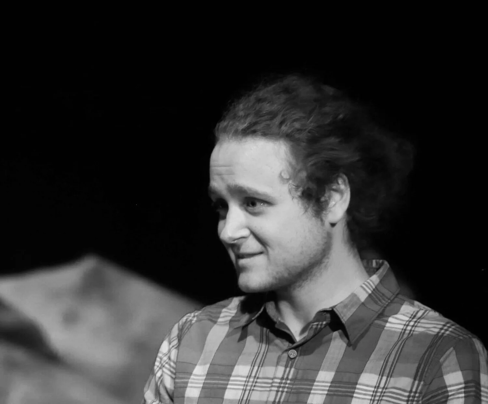
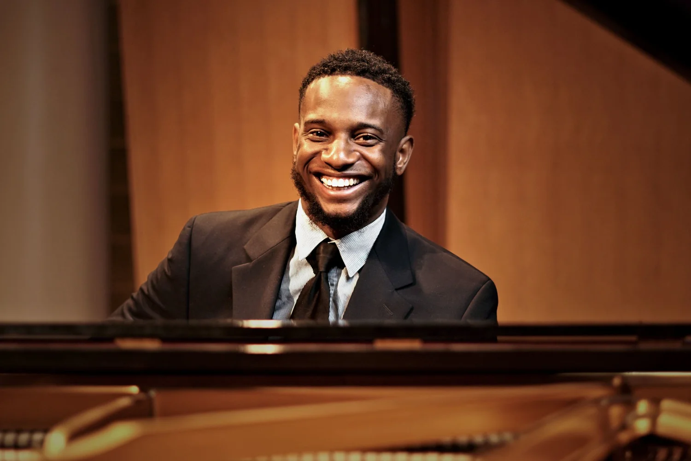
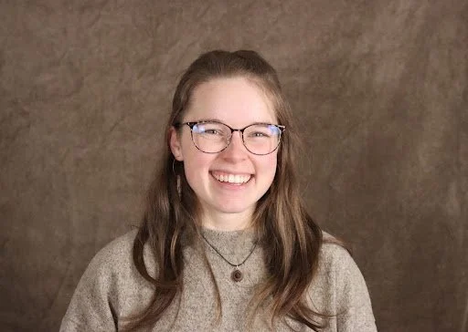
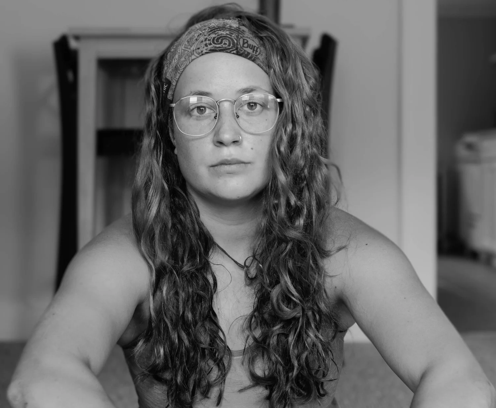

Cordelia Zars, Founder, Executive Director & Playwright
(She/Her/Hers) Cordelia is a classically-trained pianist, vocalist, and composer. She combines her passion for music with ten years of radio-broadcast journalism to create stories for the stage that explore timely social and environmental issues. Her first musical, Man Up, explores the roots of gender violence in America, and has had several successful runs in Boulder, as well as being selected for a reading at Relative Theatrics’ Playwrights’ Festival in Wyoming. Her second musical, co-authored with Alex Walker Jr, explores tensions between Indigenous land rights and rural economies in America, and recently completed a sold-out workshop run in Boulder. In her free time, Cordelia can likely be found on a mountain bike or skis in the backcountry.

Alex Walker Jr., Co-Author & Advisor
(He/His) Alex Walker Jr., (Mesquakie) works with ETP as an artistic collaborator, cultural advisor, and editor. He’s co-authoring “We’re Still Here” with Cordelia, and is a Sundancer, Tribal Elder, and Vietnam Veteran. Alex earned his BA in teaching from MSW. He served as Tribal Chairman (Sac & Fox) as well as Tribal Consultant for native inmates in Iowa prisons. “We’re Still Here,” explores tensions between Indigenous land rights and rural economies in America.

Max Middleton, Production Director
(They/Them/He/Him) Max Middleton is an accomplished theater director who has been involved in the arts his entire life. Originally from Maine, Max began acting and performing at a young age, eventually transitioning to directing while in college. With a keen eye for detail and an innate ability to bring out the best in his actors, Max has become an integral part of ETP as our Production Director. He has a natural talent for fostering empathy and creating electrifying performances that leave a lasting impression on audiences. Max's experience in the arts has also made him a valuable member of our community, and he has helped to bring a diverse range of voices to the stage. In addition to his work with ETP, Max works at the Museum of Nature and Science in Denver, where he continues to inspire and engage audiences of all ages. In his free time, Max enjoys playing D&D, reading, and exploring Denver's vibrant arts scene.

Solomon Chapman, Music Arranger & Composer
(He/His) Solomon's musical journey began with piano lessons at nine. He became lead pianist at St. John Church of God in Christ in Denver and expanded to gospel accompaniment. Graduating with honors in 2011, he earned scholarships and a 2016 Bachelor's in Music Composition from Metropolitan State University. His compositions have been featured in various ensembles, and he's set to release his debut jazz album in fall 2023, supported by the Boulder County Art Alliance's grant.

Madison Cook-Hines, Admin Assistant & Stage Manager
(She/Her) Madison is a professional director and dramaturg with a passion for new works development, puppetry (and other eccentric stagecraft), and spreadsheets. She has a BFA in directing and stage management from the University of Rhode Island, where she received a grant to write, design, direct, build, and produce her Brecht-influenced, history-inspired play, Daughters of Lavinia. Since graduating, she’s worked as director, assistant director, dramaturg, and/or producer for Gloucester Stage Company, Gloucester Stage’s NeverDark, The Gamm Theatre, PVD Fringe, URI Theatre, and Burbage Theatre Company, and is thrilled to join the team here at ETP! Madison is also the Literary Assistant for the DCPA’s 24/25 season, and a bike and ski mechanic at REI. She is head-over-heels for Colorado; you can find her on local trails, joyfully falling off her mountain bike or tripping over her feet mid-run.
Ariana DuRan, Assistant Director
(she/her) Ariana, also known as Láá’íí Sitsi (One Daughter), is an Actor based in Denver, Colorado. She is excited to be assisting directing for the first time as she was in the original cast as a River Spirit & US for Ariel infusing her Picuris Pueblo/Jicarilla Apache heritage into the role. She is a graduate of Metropolitan State University of Denver with a BFA in Music Theatre.

Saraphina Redalieu, Producer
(She/Her/Hers) Hailing from Vermont's Green Mountains, Saraphina is a screenwriter and filmmaker now local to Colorado. She recently worked in post production for the Emmy award winning documentary film company, Sender Films (Valley Uprising, The Alpinist). With a Bachelor's degree in playwriting and screenwriting from SUNY Purchase, Saraphina has gone on to write multiple feature length scripts, one of which has received accolades from the New York Script Awards, The Script Lab, and The Inroads Fellowship. Saraphina is thrilled to join ETP as a producer for the One Voice Monologue Series.
Megan Hayes, President
Sara Gleason, Vice President
Mark Russell, Secretary
Cordelia Zars, Treasurer